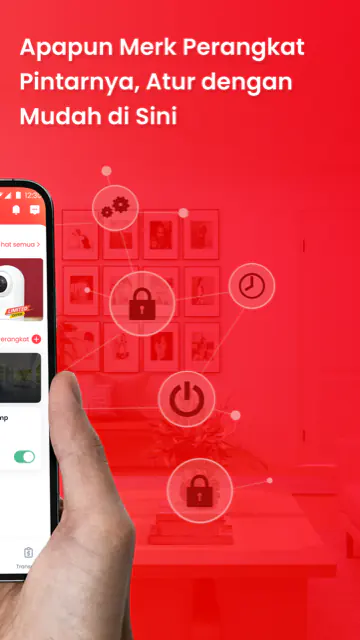
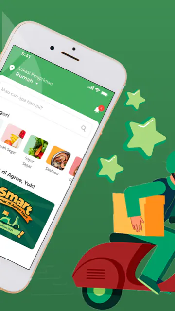
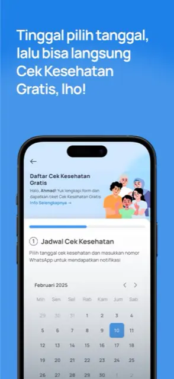

012025 — now · Lead iOS engineer
Pijar Sekolah
MVVM + Clean Architecture in SwiftUI, exam modules carrying a million students — and an AI-native delivery setup: agent roles, git hooks and CI gates.
App StoreiOS engineer · Jakarta, Indonesia
I lead iOS for Pijar Sekolah at Telkom Indonesia — the exam modules a million students sit. Mobile since 2017, three stacks, one habit: ship it and leave the team able to ship without me.
Now · Auditing what agent-driven iOS delivery can and cannot prove.
012025 — now · Lead iOS engineer
MVVM + Clean Architecture in SwiftUI, exam modules carrying a million students — and an AI-native delivery setup: agent roles, git hooks and CI gates.
App Store022022 — 2025 · iOS engineer
Took a Telkom flagship from UIKit to SwiftUI and MVC to modular Clean Architecture — without breaking it.
App Store
032021 — 2022 · iOS engineer
Marketplace for small businesses. Drove SwiftUI adoption, then wrote the standards that made it stick.
App Store
04National platform · Mobile engineer
Indonesia's national health app — production iOS where being wrong is not a retry.
App Store
Agree Agree Modal Agree Field Assistant Antares Eazy MyPertamina
04 · Contact
Jakarta or remote. I want to own architecture, delivery and the people who ship it — on teams that treat those as the same job.
rilambang@gmail.com